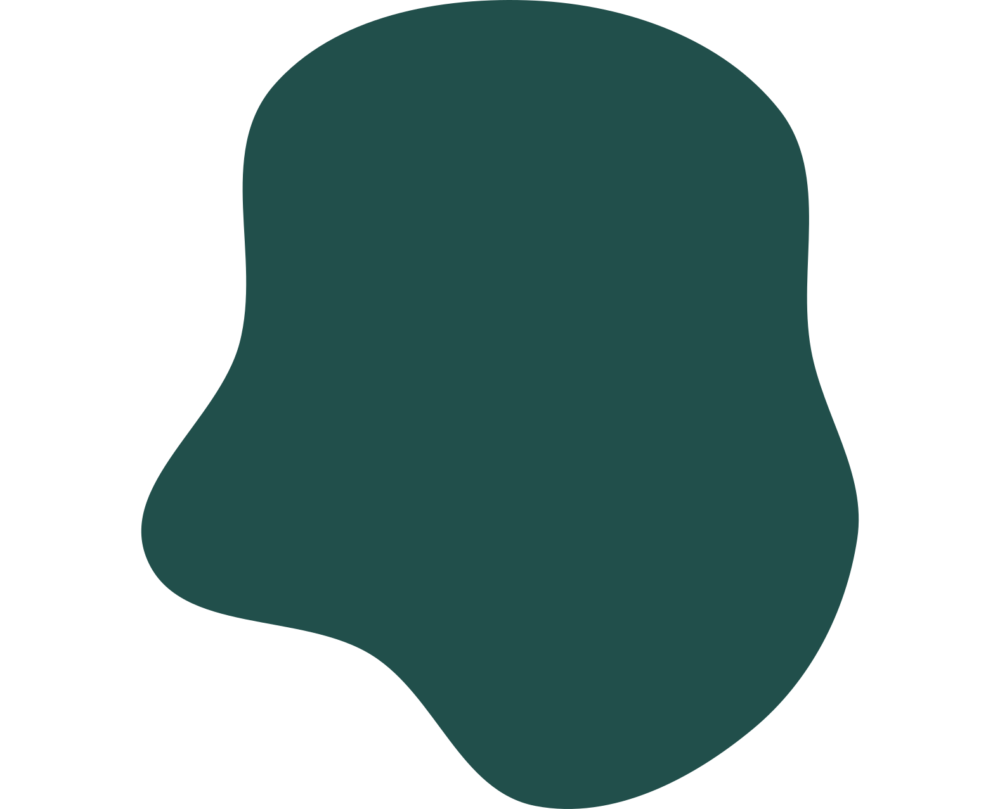
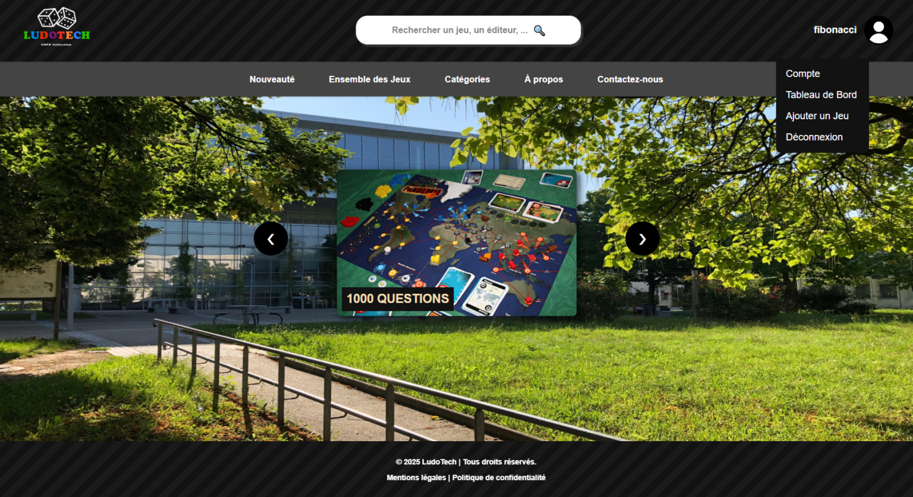
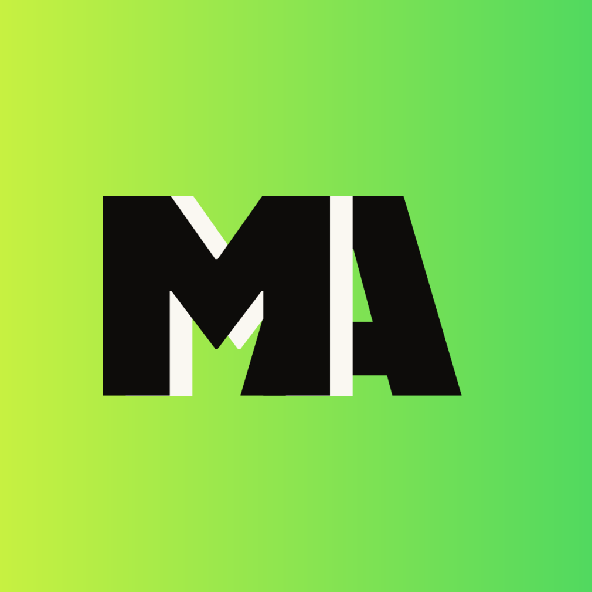
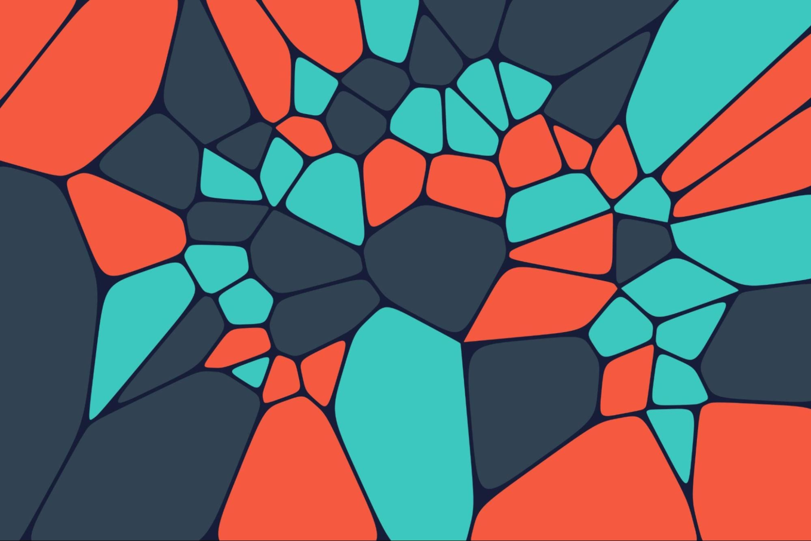
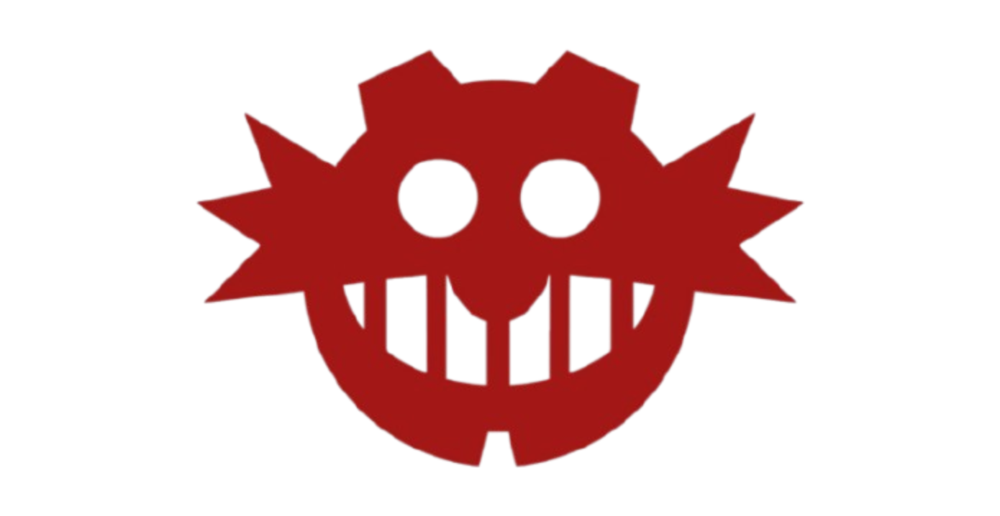

Dos Santos Ilario
Bienvenue,
À la recherche d'une alternance pour l'année 2026/2027

À la recherche d'une alternance pour l'année 2026/2027

Actuellement en dernière année de BUT Informatique j'ai développé une véritable passion pour le développement malgré le fait que je partais de zéro. Au cours de ma formation et de mes différentes expériences en entreprise j'ai acquis de solides compétences en programmation, conception logicielle, bases de données, gestion de projet et travail en équipe. Mon dernier stage m'a notamment permis de renforcer mes compétences en back-end avec Python, fastAPI et sqlalchemy en participant à l'amélioration d'une plateforme de QCM en ligne à travers l'optimisation des performances et l'ajout de nouvelles fonctionnalités. Je suis grandement intéressé par la résolution de problèmes, l'optimisation et la recherche de solutions permettant d'améliorer l'expérience utilisateur. Mon objectif est désormais de continuer à développer les compétences acquises durant ces trois dernières années et de les mettre à profit dans mes futures expériences.
À la fin de mes années de collège, j'ai obtenu le brevet des collèges avec la mention Très Bien.
J'ai obtenu mon Baccalauréat avec comme spécialités Mathématiques et Physique-Chimie.
Lors de ma première année de BUT, j’étais un peu perdu car je ne savais pas encore si c’était vraiment ce que je voulais faire. C’était un univers que je ne connaissais pas du tout. Mais avec un peu de curiosité, j’ai réussi à rattraper mon retard et développer une vrai affection pour ce domaine.
Ma deuxième année m’a permis d’améliorer et d'apprendre de nouvelles compétences techniques (PHP,Node.js/Vue.js), mais aussi transversales, comme la communication et la gestion de projet.
En deuxième année, il y a aussi eu mon premier pas dans la vie d'entreprise avec mon stage chez NESRI DISCOUNT, où j'ai eu pour mission l'administration du back-office Magento, l'intégration et la mise à jour des données produits, ainsi que la récupération d'informations depuis les sites fournisseurs. Mais ce stage m'a surtout permis de découvrir un autre aspect de l'informatique que ce soit au niveau du développement ou dans la façon de travailler en entreprise. Cette immersion dans le monde professionnel m'a vraiment donné envie d'approfondir mes connaissances en informatique et de plus de travailler en équipe.
Ma troisième année a été davantage centrée sur la réalisation , l'optimisation et la collaboration. Elle m'a permis d'apprendre à utiliser des API comme FastAPI, d'appliquer les principes du Clean Code et de réaliser une application intégrant un algorithme de recommandation.
Mon dernier stage m'a permis de renforcer mes compétences en back-end avec Python, fastAPI et sqlalchemy en participant à l'amélioration d'une plateforme de QCM en ligne à travers l'optimisation des performances de compilations et l'ajout de nouvelles fonctionnalités.






Pour cette dernière compétence j'ai pu mettre en pratique les notions de communication et de travail en équipe partout. J'ai appris à mieux communiquer avec mes camarades et à travailler ensemble pour atteindre un objectif commun. J'ai également compris l'importance de la collaboration et de l'entraide même si bien sûr il faut toujours un peu d'ésprit de compétition pour se dépasser.
Mon premier projet en Java.
Dans le cadre de ce projet, j’ai découvert les bases de Java en créant une calculatrice capable
d’effectuer des opérations simples. Cela m’a permis de me familiariser avec des notions essentielles comme les variables, les exceptions, l’héritage, le polymorphisme et les méthodes. J’ai aussi compris l’importance d’un code bien structuré et de la gestion des erreurs.
Ce projet m’a donné de solides bases et une logique de développement que j’ai pu réutiliser dans tous les langages que
j’ai appris par la suite, comme JavaScript (Node.js) ou PHP. Ainsi
que l'importance d'un projet en groupe.
Les languages utilisés :

Ici j’ai configuré un réseau LAMP en installant un serveur sous Linux
et en mettant en place une base de données MariaDB. J’ai également développé un script PHP pour interagir avec la base et automatiser certaines tâches. Cette expérience
m’a permis de mieux comprendre le fonctionnement des serveurs, la configuration d’un environnement web complet et l’importance d’une bonne organisation entre les différentes couches d’une application.
J’ai justement pu réutiliser ces compétences pour mon projet LudoTech, en travaillant en local avec un serveur web en PHP, ce qui m’a permis d’être beaucoup
plus efficace dans le développement et la correction du code.
Les languages utilisés :

Dans le cadre de mes études à l’UIT de Villetaneuse, j’ai participé à la réalisation d’un site web pour une ludothèque. L’objectif était de programmer un site intuitif et agréable à utiliser pour les visiteurs, et simple à gérer pour le curateur (ajout, suppression de jeux, gestion des emprunts).
Mon rôle principal était de concevoir et développer le back-end du site, tout en contribuant au front-end pour créer une interface dynamique et responsive. Ce projet m’a permis de mettre en pratique des notions de gestion de projet, design thinking, travail en équipe et communication, tout en découvrant les différentes étapes de la création d’un site web, du concept à la mise en ligne.
Les languages utilisés :

Pour ce projet j'ai participé au développement d'une application mobile sous Flutter dédiée à la recommandation de mangas et d'animes. Mon rôle a consisté à l'implémentation d'un système de recherche et de filtrage permettant aux utilisateurs de trouver facilement ce qu'ils souhaitent. Le projet s'appuyait sur des appels d'API afin de récupérer et d'afficher les informations des mangas et des animes de manière dynamique donc sans avoir à stocker les données des œuvres dans une base de données et ainsi gagner de l'espace(sauf pour les likes).

Notre dernier projet de groupe nous avons dû réaliser un diagramme de Voronoï à l'aide de Python et la bibliothèque matplotlib.

J'ai essayé de réaliser un Sonic en 2D en Python. C'était à une période où je ne faisais plus beaucoup de Python donc j'ai dû reprendre certaines bases. Ce que j'ai surtout cherché à faire était de créer mes propres animations. Je récupérais une image de Sonic sur Internet (non libre de droit) puis je la découpais afin d'obtenir les différents mouvements que je voulais comme la course ou le spin (j'ai uttiliser le logiciel GIMP). J'ai ensuite utilisé Python pour faire fonctionner et animer l'ensemble.